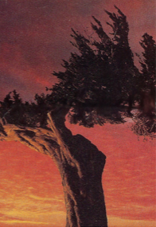

A Quarterly Journal
Jeffrey Woodward, Founder & Owner
Ray Rasmussen, General Editor
Volume 13, Number 1, March 2019

Gary LeBel
Cumming, Georgia, USA
Two Pieces
1. Twin
Due west out of Chattanooga, the Tennessee flows in indigo through the gloaming. On surrounding hillsides patches of late yellow and scarlet lay scattered here and there upon a silvery loom of naked branches.
Because I have somewhere to go and cannot stop, I leave part of myself behind to climb these slopes and tell me later of what was seen.
Over the years I've taught my twin to flare his nostrils for the scent of brooks, to relish the crackling of oak leaves underfoot through uninhabited woodlands. After scaling a high ridge, he might find that the river is wider and longer than mapmakers claim, or so it'll seem to him.
He'll kneel down and stroke the plush, velvety mosses that veil the mountain's birthmarks. He'll stand on the summit of one ridge if only to tackle the next. The notion of time as anything strictly enforced will be less than moot as daylight melts away; against the night's bitter dampness, he'll need no jacket.
And while my headlights are burning holes in the Kentucky dark, he'll be gathering kindling, and its firelight will reinvent his features over and over again in a host of changeling masks.
When I toss and turn in my rented bed in eastern Missouri, his fire will shine in through the walls as if they were panes of shoji
and seeing its sudden flare, I'll sit up to warm my hands:
it's sure to take the edge off being alone, or so he often tells me.
Blast holes left in stone:
by what nicknames were they called
the souls
that filled the hands
that drilled them?
2. Wind
Chop of waves
beneath a scowl of leaden sky:
O wild geese
gliding low above the water
tell me why I'm not an isle . . .
Wind, where have you been? How I've missed you! What sights you must have seen this year!
Last year you told me of how you'd crept into a certain bedroom in Barcelona, having chosen one from among the thousands to leave your rainy kiss upon a pair of worn-out lovers' brows, then slipped away as deftly as a thief with the slightest swish of curtains,
and that hungry child in Rio you fed on the dust of hope: what news of her?
But if you whistled through the streets of Aleppo this year, surely you'd have closed your eyes for your poor old heart has already seen too much. . . .
I'm lonely tonight, Wind, and longing for a story: start with news of that favela's child, yes, the best tales begin with children.
I'm glad you've come back tonight, to shake these pines awake,
glad to smell the dark, sweet, heavy scent
of autumn on your breath
Rhythmic plash
of waves along the lakeshore's
jumbled boulders . . .
amid these iambs of falling dusk, look!
a blue god wades slowly in . . .
Author's Notes:
A favela is a shantytown in Brazil,
a polite-sounding word for "slum".
Image: The Last God, montage/collage
(c. 2003).